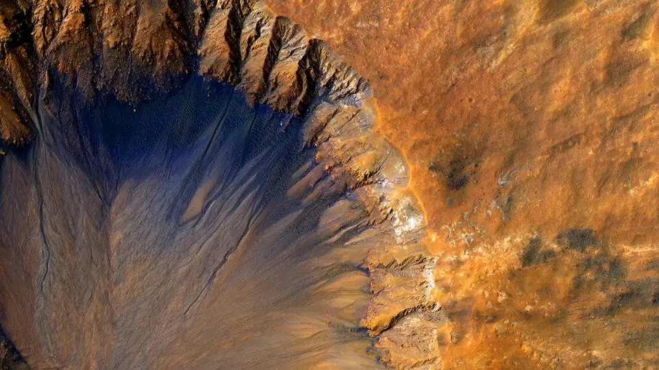

Mars Terrain
The Red Planet's Landscape
Mars has some of the most dramatic landscapes in our solar system, including the largest volcano and the deepest canyon. The planet's surface is characterized by impact craters, valleys, dunes, and polar ice caps.
The distinctive red color of Mars comes from iron oxide (rust) on its surface. The planet experiences dust storms that can cover the entire planet and last for months.
